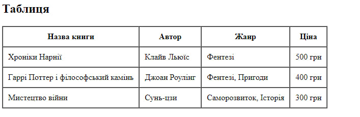
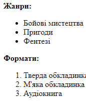
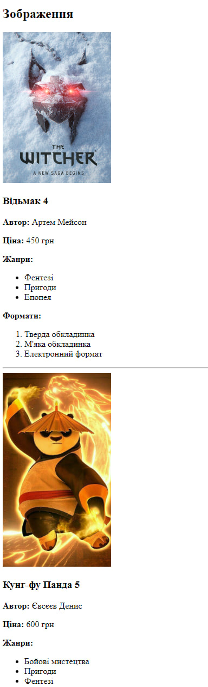

Опис предметного середовища
Бізнес логіка:
Тема: Створення веб-сайту магазину для книгарні "BookMarket"
Мета проєкту: Створити зручну та привабливу онлайн-платформу для купівлі книг, що пропонує широкий асортимент літератури для різних вікових груп та жанрів.
Сайт має забезпечувати користувачам можливість легко знаходити потрібні книги, ознайомлюватись з відгуками, отримувати рекомендації на основі їх інтересів, а також надавати зручні способи оплати та доставки.
Основною метою є підвищення продажів та формування лояльності до бренду.
Тема:СТРУКТУРА HTML-ДОКУМЕНТА. ВИБІР ПРЕДМЕТНОЇ ГАЛУЗІ.
РОБОТА З ПОСИЛАННЯМИ, ТАБЛИЦЯМИ, ЗОБРАЖЕННЯМИ, СПИСКАМИ в HTML-ДОКУМЕНТІ.
Мета:придбати практичні навички роботи з HTML-документом, таблицями, ,
зображеннями, посиланнями, списками, формами
Створити шаблон звітного HTML-документом для відображення результатів роботи всіх лабораторних
робіт.
Посилання на
репозиторій на живу сторінку власного WEB-застосунку
Посилання на
репозиторій власного WEB-застосунку
Посилання на
репозиторій звітного HTML-документа
Посилання на
репозиторій на живу сторінку звітного HTML-документ
Посилання на
репозиторій з самостійними роботами
Посилання на
репозиторій живу сторінку з самостійними роботами
СТРУКТУРА ДОКУМЕНТА
<!DOCTYPE html>
<html lang="uk">
<head>
<meta charset="UTF-8">
<meta name="viewport" content="width=device-width, initial-scale=1.0">
<title>BookMart - Магазин Книг</title>
</head>
<body>
<main>
<h2>Зображення</h2>
<div>
<img src="Book1.jpg" alt="Назва книги 1" width="200">
<h3>Відьмак 4</h3>
<p><strong>Автор:</strong> Артем Мейсон</p>
<p><strong>Ціна:</strong> 450 грн</p>
<ul>
<li>Фентезі</li>
<li>Пригоди</li>
<li>Епопея</li>
</ul>
<ol>
<li>Тверда обкладинка</li>
<li>М'яка обкладинка</li>
<li>Електронний формат</li>
</ol>
</div>
</main>
</body>
</html>

HTML таблиці використовуються для представлення даних у форматі рядків і стовпців, що робить їх
зручними для
відображення структурованої інформації, такої як таблиці з даними, статистикою чи звітами.
Основні елементи таблиць:
<table>: оголошує саму таблицю.<tr> (table row): визначає рядок таблиці.<th> (table header): визначає заголовок стовпця (зазвичай текст
відображається жирним шрифтом
та по центру).<td> (table data): визначає клітинку з даними в рядку таблиці.
Приклад:
<table border="1" cellpadding="10" cellspacing="0">
<thead>
<tr>
<th>Назва книги</th>
<th>Автор</th>
<th>Жанр</th>
<th>Ціна</th>
</tr>
</thead>
<tbody>
<tr>
<td>Хроніки Нарнії</td>
<td>Клайв Льюїс</td>
<td>Фентезі</td>
<td>500 грн</td>
</tr>
</tbody>
</table>

HTML дозволяє створювати списки для структурування контенту. Існує два основних типи списків:
нумеровані
(упорядковані) і ненумеровані (неупорядковані).
Основні елементи списків:
<ul>: ненумерований список (unordered list).<ol>: нумерований список (ordered list).<li>: пункт списку (list item).
Приклад ненумерованого списку:
<ul>
<li>Пункт 1</li>
<li>Пункт 2</li>
</ul>
Приклад нумерованого списку:
<ol>
<li>Перше дію</li>
<li>Друге дію</li>
</ol>

HTML-код зображень використовується для вставлення графіки в веб-сторінку. Зображення можуть
бути статичними або
анімованими, і вони зазвичай використовуються для ілюстрації контенту, прикраси або надання
додаткової інформації.
Основні елементи зображень:
<img>: використовується для вставлення зображення. Основні атрибути:
src: вказує URL-адресу зображення.alt: альтернативний текст, який відображається, якщо зображення не може
бути завантажено, або
використовується для доступності.
Приклад:
<img src="path/to/image.jpg" alt="Опис зображення" width="300" height="200">
Висновки
У процесі виконання лабораторної роботи я здобув цінний досвід у створенні HTML-документів. Основна увага була зосереджена на структуруванні контенту, використанні таблиць, списків і зображень для ефективної організації інформації.
Я навчився застосовувати елементи HTML для побудови зручних для користувачів веб-сторінок, а також зрозумів важливість кодування у створенні інтуїтивно зрозумілого інтерфейсу.
Отримані навички дозволяють мені впевнено працювати над подальшими проектами у сфері веб-розробки.